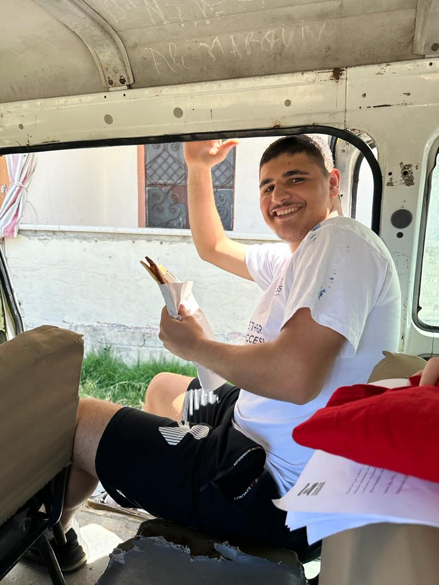

.png)
Volunteer Work
My municipality decided to organize a campaign to clean our beach. So, I decided to volunteer.
Community Service
Access program gave us the opportunity to implement a community service inorder to help people in our communities.
Title of the project
Cleaning Beach
Type of the project
Volunteering
Objectives of the project
The main goals of organizing a beach cleanup are to:
1-Preserve the environment
2-Promote cleanliness and safety
3-Raise awareness
4-Encourage community engagement
5-Inspire long-term change
Duration of the project
From: 17-8-2021 till: 21-8-2021
Role in the project
Volunteer
Outcome of the project
Reduced pollution
Positive impact on tourism
A cleaner and helthier beach environment
Raised awareness
Title of the project
Famine fighters (supporting the elderly community)
Type of the project
Community Service
Objectives of the project
The main goals:
1-Provide essential support and companionship to underprivileged elderly residents.
2-Spread kindness among the elderly.
3-Support the elderly financially and psychologically
4-Making positive impact and bulding stronger communities
Duration of the project
From: 17-8-2021 till: 21-8-2021
Role in the project
Leader-Guide- A member who participate in planing, research and implementation
Outcome of the project
Helping elderly people
Improve my skills and knowledge
Showing my talent
Hand by hand we can change our reality
The team is a source of labor force
For more details click on
READ MORE|  |